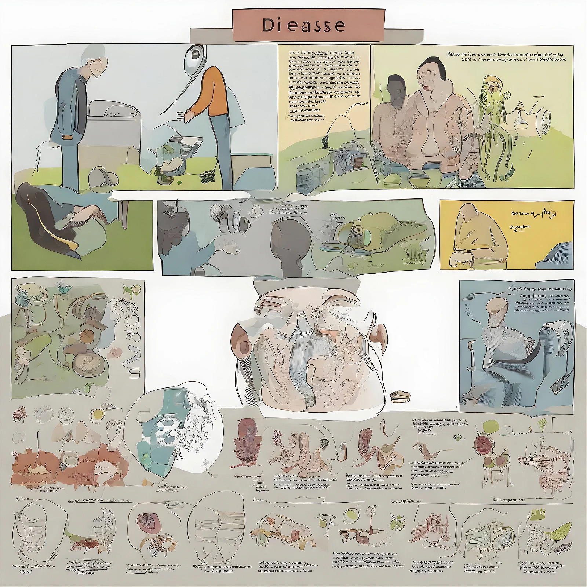
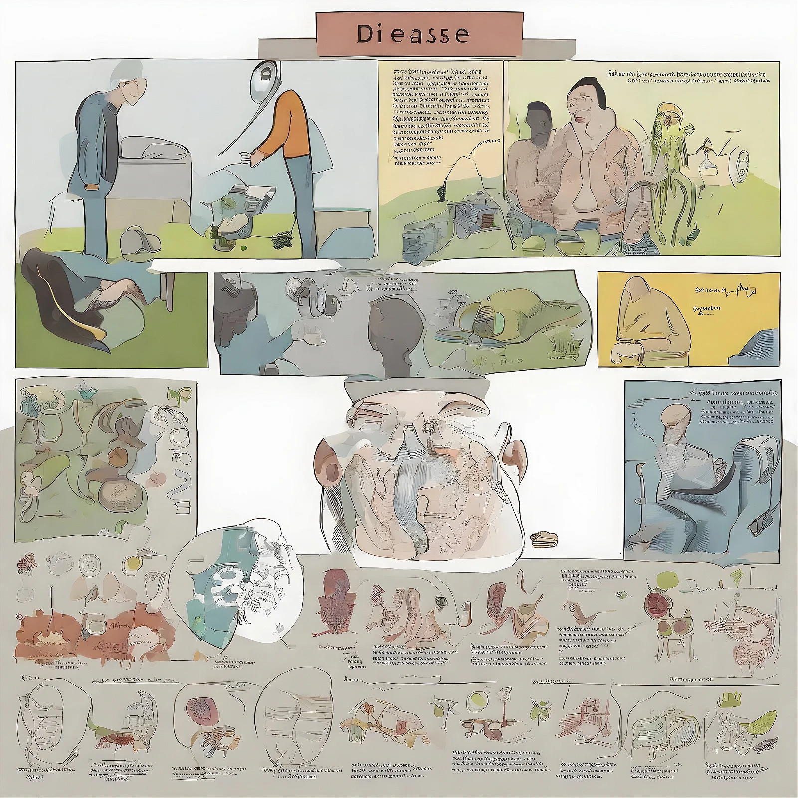
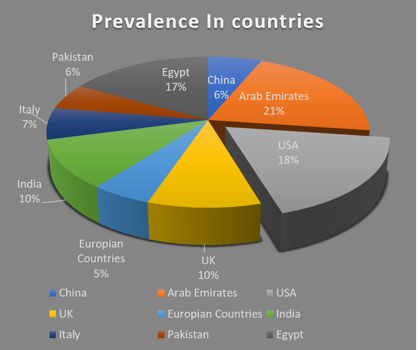

Summary:
According to the International Development Association (IDA), dyslexia is a neurological and developmental disease that affects children and adults in several ways. Based on research, there are obvious differences in the structure and function of the brains between those who have dyslexia and those who do not. Also, they report that dyslexia is a particular learning problem with a neurological cause. It is typified by issues with accurate and/or flexible word recognition, as well as by poor spelling and decoding skills. Ineffective classroom instruction and a phonological deficiency that is frequently unanticipated in relation to other cognitive abilities are the usual causes of these issues. Comprehending difficulties and a reduced reading experience can be secondary effects that inhibit vocabulary and background information acquisition.
Symptoms:
.png) 

1. Reading disorders cause slower reading speed.
2. Children with reading disorders may misread words but still grasp meaning from context.
3. Slow reading rate and comprehension should both be considered in diagnosing reading disorders.
4. Adults with reading impairments also have limited reading speed, especially for complex words.
5. Reading disorders can affect learning foreign languages, math word problems.
6. Spelling disorders involve frequent spelling errors, often leading to word avoidance.
7. Many kids and teens with dyslexia have psychological issues, more than general population.
8. Learning new words slowly
Diagnosis:
Finding a disease or condition based on its symptoms and signs is the process of diagnosis. In addition to the primary symptoms of reading and/or spelling disorders, the diagnosis of dyslexia and isolated reading and spelling disorders is complicated and depends on the following list:
1. Mental illness (ADHD)
2. The cognitive capacity (intelligence) of the youngster
3. Chronic illnesses, such as diabetes
4. Negative psychosocial variables (serious school-related upsetting problems, such as bullying)
5. The child's psychosocial functioning level, or how they interact with kids their own age.
Treatments:

Medical care used to control or cure an illness or condition is referred to as treatment. Every situation in DD is different and extremely complex. As soon as possible, thorough testing should be done, and each instance should have a customized treatment approach. An appropriate multidisciplinary team (a pediatrician, educational psychologist, neurologist, specialist teachers, speech therapists, and other specialists) should oversee the course of treatment, and the school, parents, and child should all be strongly urged to participate. Explicit training and a thorough intervention are necessary. The most successful treatment approach is phonics-based instruction, according to scientific data from the National Reading Panel, which carried out a meta-analysis of numerous reading interventions in the literature. In school, teachers can use the advice to better understand the child's psychological stress and to discuss with them how the youngster can integrate into the school more successfully. Reporting the dyslexia diagnosis is also required.
Causes:
The term "Cause" can also refer to the reason why something occurs, particularly something negative. The following reading difficulties' causes were identified by the meta-analysis:
1. An inability to recognize a word's letter sequences concurrently and an attempt to recognize more letters simultaneously than the reader.
2. A longer fixation duration and an early new shift to the following word or word segment required to recognize the letter sequence of a word.
3. The duration required for the phonemes associated with the graphs to be retrieved from memory.
4. The pronunciation of a word can begin too soon, leading to an early shift to the following word or word fragment.
Prevalence:
The prevalence of dyslexia in people is rising even while the rate of education declines. The number of dyslexic students enrolling in higher education has been rising significantly on a global scale. As to the BPS data, approximately 10% of the global population suffers from dyslexia, with 4% of them being seriously dyslexic and the remaining 6% having mild to moderate difficulties. According to one study, dyslexia affects 3.6% of children on the Isle of Wight and 9.3% of children in London who come from lower socioeconomic backgrounds. It also affects 3.6 to 8.5% of children in Italy and 4.5 to 12% of children in the United States. Clinicians commonly report a ratio of 2 to 3 boys for every girl, though prevalence may vary depending on gender. Gender disparities are an artifact of sample bias, according to some experts. But according to a more recent meta-analysis, four separate scientific studies have actually found a noticeably higher male-to-female prevalence ratio (2-4:1).